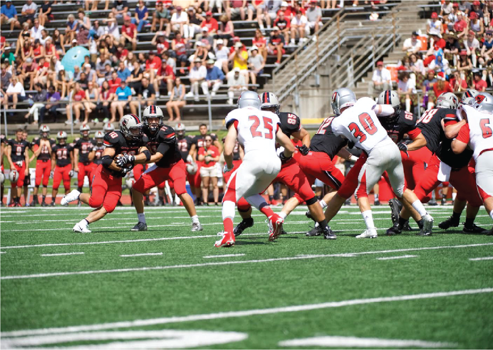

CMU Athletics
Team
- James Jameson
- Hyun Hee Clara Kim
- Andrew Wang
Opportunity
The equipment desk in the Cohon Center allows students, staff, faculty and guests to rent equipment for use in the athletics facilities. Currently, CMU Athletics manages their equipment rental with Google forms and an excel sheet. Student employees fill out Google forms with basic information identifying the customer and what equipment is checked out. This information is then stored in an Excel sheet and includes fields such as the customer’s name, Andrew ID, email, and the equipment they have checked out. The equipment rental process has been identified as a potential area for improvement.
Outcomes
Our team has developed an equipment management system with the capabilities to check in, check out, and manage inventory in a reliable and efficient manner. The checkout process is now automated so that only available equipment is listed and have all customers with an Andrew ID preregistered in the system. Also, to ensure efficiency, we’ve made it so that the check-in process can now be completed with just one click and the inventory process helps determine whether or not the equipment being rented is in fact in stock. Our team worked with both CMU Athletics and the IT department for Student Affairs during the process of development to ensure that the implemented solution would be sustainable. Capacity building with the people of the organization interacting with the application (administrators and student employees) also took place in the forms of user testing and training.
Deliverables
Our final deliverable is the equipment management system web application deployed on the development server for CMU Student Affairs. A private GitHub repository will also be delivered to the Student Affairs IT team. Documentation for the system and a manual on how to use the system from the employee and administrative sides will be delivered as well.